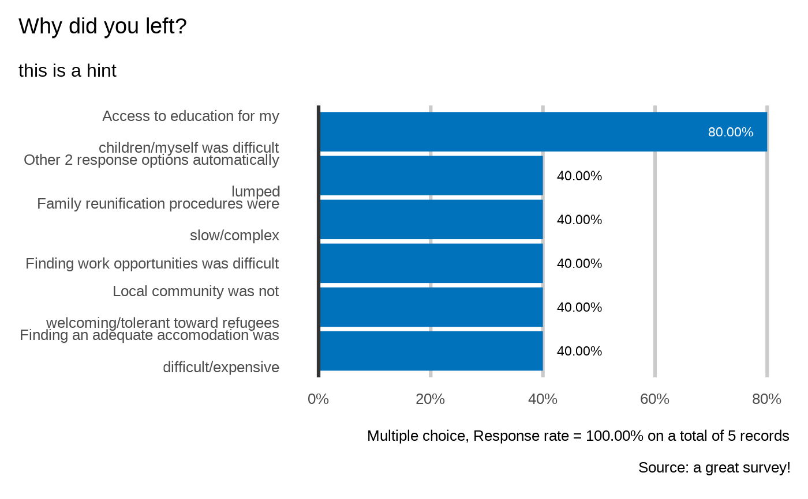

Crunch all variables according to the analysis plan
Arguments
- datalist
An object of the "datalist" class as defined in kobocruncher
- dico
path to the xlsform file used to colllect the data
Examples
dico <- kobo_dico( xlsformpath = system.file("sample_xlsform.xlsx", package = "kobocruncher") )
datalist <- kobo_data(datapath = system.file("data.xlsx", package = "kobocruncher") )
kobo_cruncher(datalist = datalist,
dico = dico)
#> Loading required namespace: ggplot2
#> Where is the interview taking place
#> <svg aria-hidden="true" role="img" viewBox="0 0 448 512" style="height:1em;width:0.88em;vertical-align:-0.125em;margin-left:auto;margin-right:auto;font-size:inherit;fill:grey;overflow:visible;position:relative;"><path d="M433.941 65.941l-51.882-51.882A48 48 0 0 0 348.118 0H176c-26.51 0-48 21.49-48 48v48H48c-26.51 0-48 21.49-48 48v320c0 26.51 21.49 48 48 48h224c26.51 0 48-21.49 48-48v-48h80c26.51 0 48-21.49 48-48V99.882a48 48 0 0 0-14.059-33.941zM266 464H54a6 6 0 0 1-6-6V150a6 6 0 0 1 6-6h74v224c0 26.51 21.49 48 48 48h96v42a6 6 0 0 1-6 6zm128-96H182a6 6 0 0 1-6-6V54a6 6 0 0 1 6-6h106v88c0 13.255 10.745 24 24 24h88v202a6 6 0 0 1-6 6zm6-256h-64V48h9.632c1.591 0 3.117.632 4.243 1.757l48.368 48.368a6 6 0 0 1 1.757 4.243V112z"/></svg>`plot_select_one(datalist = datalist, dico = dico, "location")`
#>
#>
#> Loading required package: ggplot2
#> ---
#>
#>
#>
#> # Respondant profile
#>
#> What is your country of Origin?
#> <svg aria-hidden="true" role="img" viewBox="0 0 448 512" style="height:1em;width:0.88em;vertical-align:-0.125em;margin-left:auto;margin-right:auto;font-size:inherit;fill:grey;overflow:visible;position:relative;"><path d="M433.941 65.941l-51.882-51.882A48 48 0 0 0 348.118 0H176c-26.51 0-48 21.49-48 48v48H48c-26.51 0-48 21.49-48 48v320c0 26.51 21.49 48 48 48h224c26.51 0 48-21.49 48-48v-48h80c26.51 0 48-21.49 48-48V99.882a48 48 0 0 0-14.059-33.941zM266 464H54a6 6 0 0 1-6-6V150a6 6 0 0 1 6-6h74v224c0 26.51 21.49 48 48 48h96v42a6 6 0 0 1-6 6zm128-96H182a6 6 0 0 1-6-6V54a6 6 0 0 1 6-6h106v88c0 13.255 10.745 24 24 24h88v202a6 6 0 0 1-6 6zm6-256h-64V48h9.632c1.591 0 3.117.632 4.243 1.757l48.368 48.368a6 6 0 0 1 1.757 4.243V112z"/></svg>`plot_select_one(datalist = datalist, dico = dico, "profile.country")`
#>
#>
#> Loading required package: tm
#> Loading required package: NLP
#>
#> Attaching package: ‘NLP’
#> The following object is masked from ‘package:ggplot2’:
#>
#> annotate
#> Warning: transformation drops documents
#> Warning: transformation drops documents
#> Warning: transformation drops documents
#> Warning: transformation drops documents
#> Warning: transformation drops documents
#> Warning: transformation drops documents
#> Warning: transformation drops documents
#> Warning: transformation drops documents
#> Warning: transformation drops documents
#> Warning: transformation drops documents
#> What's you occupation?
#> <svg aria-hidden="true" role="img" viewBox="0 0 448 512" style="height:1em;width:0.88em;vertical-align:-0.125em;margin-left:auto;margin-right:auto;font-size:inherit;fill:grey;overflow:visible;position:relative;"><path d="M433.941 65.941l-51.882-51.882A48 48 0 0 0 348.118 0H176c-26.51 0-48 21.49-48 48v48H48c-26.51 0-48 21.49-48 48v320c0 26.51 21.49 48 48 48h224c26.51 0 48-21.49 48-48v-48h80c26.51 0 48-21.49 48-48V99.882a48 48 0 0 0-14.059-33.941zM266 464H54a6 6 0 0 1-6-6V150a6 6 0 0 1 6-6h74v224c0 26.51 21.49 48 48 48h96v42a6 6 0 0 1-6 6zm128-96H182a6 6 0 0 1-6-6V54a6 6 0 0 1 6-6h106v88c0 13.255 10.745 24 24 24h88v202a6 6 0 0 1-6 6zm6-256h-64V48h9.632c1.591 0 3.117.632 4.243 1.757l48.368 48.368a6 6 0 0 1 1.757 4.243V112z"/></svg> `plot_text(datalist = datalist, dico = dico, "profile.occupation")`
#>
#> Why did you left?
#> <svg aria-hidden="true" role="img" viewBox="0 0 448 512" style="height:1em;width:0.88em;vertical-align:-0.125em;margin-left:auto;margin-right:auto;font-size:inherit;fill:grey;overflow:visible;position:relative;"><path d="M433.941 65.941l-51.882-51.882A48 48 0 0 0 348.118 0H176c-26.51 0-48 21.49-48 48v48H48c-26.51 0-48 21.49-48 48v320c0 26.51 21.49 48 48 48h224c26.51 0 48-21.49 48-48v-48h80c26.51 0 48-21.49 48-48V99.882a48 48 0 0 0-14.059-33.941zM266 464H54a6 6 0 0 1-6-6V150a6 6 0 0 1 6-6h74v224c0 26.51 21.49 48 48 48h96v42a6 6 0 0 1-6 6zm128-96H182a6 6 0 0 1-6-6V54a6 6 0 0 1 6-6h106v88c0 13.255 10.745 24 24 24h88v202a6 6 0 0 1-6 6zm6-256h-64V48h9.632c1.591 0 3.117.632 4.243 1.757l48.368 48.368a6 6 0 0 1 1.757 4.243V112z"/></svg> `plot_select_multiple(datalist = datalist, dico = dico, "profile.reason")`
#>
#>

#> What's the size of your household?
#> <svg aria-hidden="true" role="img" viewBox="0 0 448 512" style="height:1em;width:0.88em;vertical-align:-0.125em;margin-left:auto;margin-right:auto;font-size:inherit;fill:grey;overflow:visible;position:relative;"><path d="M433.941 65.941l-51.882-51.882A48 48 0 0 0 348.118 0H176c-26.51 0-48 21.49-48 48v48H48c-26.51 0-48 21.49-48 48v320c0 26.51 21.49 48 48 48h224c26.51 0 48-21.49 48-48v-48h80c26.51 0 48-21.49 48-48V99.882a48 48 0 0 0-14.059-33.941zM266 464H54a6 6 0 0 1-6-6V150a6 6 0 0 1 6-6h74v224c0 26.51 21.49 48 48 48h96v42a6 6 0 0 1-6 6zm128-96H182a6 6 0 0 1-6-6V54a6 6 0 0 1 6-6h106v88c0 13.255 10.745 24 24 24h88v202a6 6 0 0 1-6 6zm6-256h-64V48h9.632c1.591 0 3.117.632 4.243 1.757l48.368 48.368a6 6 0 0 1 1.757 4.243V112z"/></svg> `plot_integer(datalist = datalist, dico = dico, "profile.HHSize")`
#>
#>
#> `stat_bin()` using `bins = 30`. Pick better value with `binwidth`.
#> Age
#> <svg aria-hidden="true" role="img" viewBox="0 0 448 512" style="height:1em;width:0.88em;vertical-align:-0.125em;margin-left:auto;margin-right:auto;font-size:inherit;fill:grey;overflow:visible;position:relative;"><path d="M433.941 65.941l-51.882-51.882A48 48 0 0 0 348.118 0H176c-26.51 0-48 21.49-48 48v48H48c-26.51 0-48 21.49-48 48v320c0 26.51 21.49 48 48 48h224c26.51 0 48-21.49 48-48v-48h80c26.51 0 48-21.49 48-48V99.882a48 48 0 0 0-14.059-33.941zM266 464H54a6 6 0 0 1-6-6V150a6 6 0 0 1 6-6h74v224c0 26.51 21.49 48 48 48h96v42a6 6 0 0 1-6 6zm128-96H182a6 6 0 0 1-6-6V54a6 6 0 0 1 6-6h106v88c0 13.255 10.745 24 24 24h88v202a6 6 0 0 1-6 6zm6-256h-64V48h9.632c1.591 0 3.117.632 4.243 1.757l48.368 48.368a6 6 0 0 1 1.757 4.243V112z"/></svg> `plot_integer(datalist = datalist, dico = dico, "members.age")`
#>
#>
#> `stat_bin()` using `bins = 30`. Pick better value with `binwidth`.
#> Sex
#> <svg aria-hidden="true" role="img" viewBox="0 0 448 512" style="height:1em;width:0.88em;vertical-align:-0.125em;margin-left:auto;margin-right:auto;font-size:inherit;fill:grey;overflow:visible;position:relative;"><path d="M433.941 65.941l-51.882-51.882A48 48 0 0 0 348.118 0H176c-26.51 0-48 21.49-48 48v48H48c-26.51 0-48 21.49-48 48v320c0 26.51 21.49 48 48 48h224c26.51 0 48-21.49 48-48v-48h80c26.51 0 48-21.49 48-48V99.882a48 48 0 0 0-14.059-33.941zM266 464H54a6 6 0 0 1-6-6V150a6 6 0 0 1 6-6h74v224c0 26.51 21.49 48 48 48h96v42a6 6 0 0 1-6 6zm128-96H182a6 6 0 0 1-6-6V54a6 6 0 0 1 6-6h106v88c0 13.255 10.745 24 24 24h88v202a6 6 0 0 1-6 6zm6-256h-64V48h9.632c1.591 0 3.117.632 4.243 1.757l48.368 48.368a6 6 0 0 1 1.757 4.243V112z"/></svg>`plot_select_one(datalist = datalist, dico = dico, "members.sex")`
#>
#>